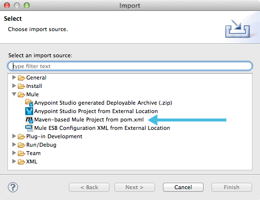

Creating an APIkit Project with Maven
You can add APIkit components to an existing maven project, for example a legacy project that you want to modernize using RAML and APIkit by using Maven commands. You need to have Apache Maven installed on your local system.
Familiarity with the following topics is recommended:
-
mvn man page or mvn help page
Maven Settings File
You need a Maven settings.xml file in the .m2 directory that includes the Mule repositories. If you do not have a settings.xml file, create one that points to Mule Repositories. Add the following content to your settings.xml file.
<settings>
<pluginGroups>
<pluginGroup>org.mule.tools</pluginGroup>
</pluginGroups>
<profiles>
<profile>
<activation>
<activeByDefault>true</activeByDefault>
</activation>
<id>mule-repositories</id>
<repositories>
<repository>
<id>mulesoft-releases</id>
<name>MuleSoft Releases Repository</name>
<url>http://repository.mulesoft.org/releases/</url>
</repository>
<repository>
<id>mulesoft-snapshots</id>
<name>MuleSoft Snapshots Repository</name>
<url>http://repository.mulesoft.org/snapshots/</url>
</repository>
</repositories>
<pluginRepositories>
<pluginRepository>
<id>mulesoft-releases</id>
<name>MuleSoft Releases</name>
<url>http://repository.mulesoft.org/releases/</url>
</pluginRepository>
<pluginRepository>
<id>mulesoft-snapshots</id>
<name>MuleSoft Snapshots</name>
<url>http://repository.mulesoft.org/snapshots/</url>
</pluginRepository>
</pluginRepositories>
</profile>
</profiles>
</settings>Maven Archetype Command
You use the mvn archetype command to create APIkit parts for the project. Maven stores the instructions for building the project and associated settings in a template called an archetype. APIkit provides a specialized Maven archetype tailored to the needs of creating APIkit projects. It is hosted in Mule’s public repositories so you don’t need to download it; you can simply reference its virtual address in your Maven commands.
The mvn archetype command creates a new project, directory structure, and an empty api.raml file. The command sets up required dependencies.
mvn archetype parameters
The mvn archetype parameters define where to find the archetype.
| Parameter | Value |
|---|---|
|
|
|
|
|
|
|
|
The archetype version is the APIKit project archetype and the APIKit version used for the generated artifact.
You can include the following parameters in the mvn archetype command, using values specific to your project.
| Parameter | Description |
|---|---|
|
The standard Maven group Id for the project. |
|
The file name Maven will give to your project. |
|
The Java package under which the message processor will live. |
|
The version of the new project. |
If you don’t include these parameters, Maven prompts you for values upon execution.
Generating a New Project
To generate a new project in Studio:
-
In a terminal, navigate to the directory where you want to create the project, then run the following Maven generation command from within your Anypoint Studio workspace folder, for example
C:\Users\Aaron\workspace.mvn archetype:generate -DarchetypeGroupId=org.mule.tools -DarchetypeArtifactId=apikit-archetype -DarchetypeVersion=3.8.3 -DarchetypeRepository=http://repository.mulesoft.org/releases -DgroupId=org.mule.tools -DartifactId=APIKit-project -Dpackage=package-name -Dversion=1.0
Maven stores the project files in the Studio workspace.
-
Maven prompts you to ensure that the parameters listed above are correct. Type
Y, then press enter to confirm.Maven generates a new project in the specified directory that includes the latest Mule runtime available. To use an earlier runtime, open the pom.xml file and change the contents of the
<mule.version>XML tag.
Preparing a RAML File
The api.raml file in src/main/api is initially empty. To populate the file, complete one of the following tasks:
-
Edit the
api.ramlfile to define your API. -
Use the provided sample RAML file as an example.
-
If you have a RAML file defines your API:
-
Replace the contents of the default
api.ramlfile with your description
OR -
Edit the
mule-config.xmlfile to point to the file that contains your RAML description.In the
apikit:configtag, the attributeramlspecifies the file from which to acquire the API definition. Replace the default value,api.raml, with the path to the RAML file, as follows.<apikit:config name="apiConfig" raml="CUSTOM FILE NAME" consoleEnabled="true" consolePath="console" />
-
Generating Backend Flows
You need to generate backend flows for each resource-action pairing in the RAML you create.
-
From the command line, navigate to the newly-created folder that contains your project.
-
Run the following Maven command:
mvn org.mule.tools:apikit-maven-plugin:createFrom the information in
api.raml, the plugin creates the backend flows.
Importing the Project into Anypoint Studio
After creating the basic structure for a project, import the project into Anypoint Studio, and then enhance the backend flows to map RAML resources to actions.
-
In Studio, under the File menu, select Import.
-
In the Import wizard, expand the Mule folder, then select
Maven-based Mule project from pom.xml. -
Complete the remaining steps in the wizard to identify the name and location of your project’s
pom.xmlon your local drive, then click Finish to import the project.